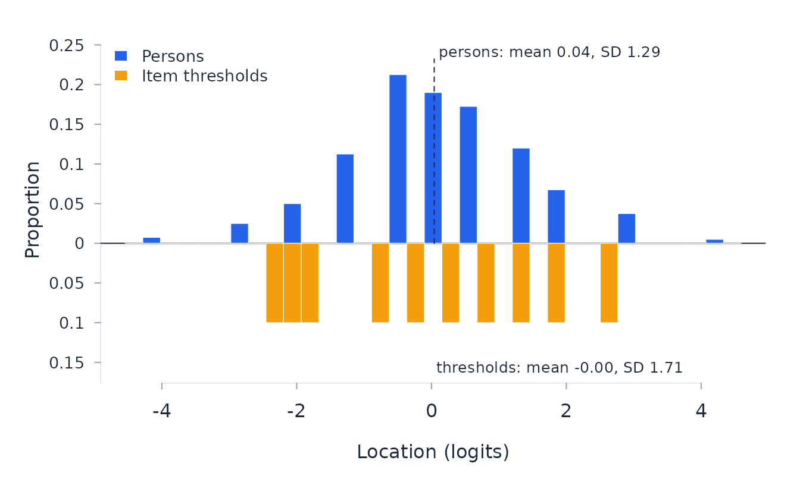

This vignette walks through the standard analysis sequence of Rasch Measurement Theory (Rasch 1960, 1961; Andrich and Marais 2019): fit by pairwise conditional estimation, then examine whether the data meet the model’s requirements before the measures are interpreted.
The same principal workflow is available through the package’s
point-and-click Shiny application. Run rasch::run_app()
after installation to import data, choose a model, inspect diagnostics,
and export results without writing R analysis code. The application
shows the corresponding R call for each analysis; this article explains
the same decisions in their command-line form.
Fit the model required by the scoring structure
rasch fits the partial credit model by default.
Dichotomous data are its one-threshold special case. Set
model = "RSM" only when the same category threshold
structure is intended to hold across items.
The example uses simulated data so that the complete workflow is reproducible. With observed data, inspect the coding and frequency of every category before fitting the model. Negative scores are read as missing; valid categories begin at zero.
d <- simulate_rasch(n_persons = 400, n_items = 10, seed = 17)
fit <- rasch(d, id = "id")
fit
#> rasch PCM analysis: 10 items, 400 persons
#> Pairwise conditional ML (Andrich & Luo): converged in 3 iterations
#> PSI 0.562 (no extremes 0.520), item SI 0.993, alpha 0.588, power of fit: low
#> Total item-trait chi-square 78.132 on 60 df, p = 0.058Read fit and targeting together
Item fit is not a single pass-or-fail decision. Examine the direction and size of residual misfit, the item-trait interaction, category thresholds, and the substantive content of an item. Targeting determines how much information the scale supplies over the observed person distribution.
fit_summary_table(fit)
#> statistic value
#> 1 Model PCM
#> 2 Estimation pairwise conditional ML
#> 3 Converged yes
#> 4 Iterations 3
#> 5 Total item-trait chi-square 78.132
#> 6 Degrees of freedom 60
#> 7 Item-trait probability 0.058
#> 8 Class intervals 7
#> 9 Item fit residual mean -0.21
#> 10 Item fit residual SD 0.63
#> 11 Item fit residual skewness 1.66
#> 12 Item fit residual kurtosis 2.19
#> 13 Person fit residual mean -0.31
#> 14 Person fit residual SD 0.75
#> 15 Person fit residual skewness 0.58
#> 16 Person fit residual kurtosis -0.05
#> 17 Fit-location correlation (items) -0.082
#> 18 Fit-location correlation (persons) -0.018
#> 19 Items with adjusted chi-square p < .05 0 of 10
#> 20 Disordered thresholds none
targeting_table(fit)
#> statistic value
#> 1 Person location mean 0.040
#> 2 Person location SD 1.294
#> 3 Person location skewness 0.01
#> 4 Person location kurtosis 0.55
#> 5 Person location mean (no extremes) 0.051
#> 6 Person location SD (no extremes) 1.214
#> 7 Item location mean (constrained) -0.000
#> 8 Item location SD 1.708
#> 9 Item location skewness 0.04
#> 10 Item location kurtosis -1.29
#> 11 Threshold minimum -2.250
#> 12 Threshold maximum 2.572
#> 13 Persons below threshold range (%) 3.2
#> 14 Persons above threshold range (%) 4.2
#> 15 PSI 0.562
#> 16 Separation 1.13
#> 17 Person strata 1.8
#> 18 PSI without extremes 0.520
#> 19 n without extremes 395
#> 20 Item separation reliability 0.993
#> 21 Coefficient alpha 0.588
#> 22 n complete (alpha) 400
fit$threshold_diagnostics
#> NULL
head(test_information(fit))
#> theta info sem
#> 1 -6.0 0.06796 3.836
#> 2 -5.9 0.07484 3.655
#> 3 -5.8 0.08239 3.484
#> 4 -5.7 0.09066 3.321
#> 5 -5.6 0.09973 3.167
#> 6 -5.5 0.10965 3.020
plot_pimap(fit)
Check invariance, independence, and dimensionality
Person factors should be nominated in the fit and tested jointly with
dif_anova. Residual correlations and the dimensionality
test address local independence and the adequacy of one measurement
dimension. They are evidence to investigate, not automatic instructions
to delete or combine items.
head(residual_correlations(fit))
#> $matrix
#> I01 I02 I03 I04 I05 I06 I07 I08
#> I01 1.00000 -0.08998 -0.05710 -0.07927 -0.13267 -0.12276 -0.12153 0.02124
#> I02 -0.08998 1.00000 -0.10170 -0.05660 -0.06352 -0.09160 -0.08028 -0.09016
#> I03 -0.05710 -0.10170 1.00000 -0.10296 -0.14255 -0.05303 -0.06165 -0.12018
#> I04 -0.07927 -0.05660 -0.10296 1.00000 -0.20682 -0.13241 -0.19508 -0.18109
#> I05 -0.13267 -0.06352 -0.14255 -0.20682 1.00000 -0.10922 -0.13318 -0.16168
#> I06 -0.12276 -0.09160 -0.05303 -0.13241 -0.10922 1.00000 -0.18064 -0.14918
#> I07 -0.12153 -0.08028 -0.06165 -0.19508 -0.13318 -0.18064 1.00000 -0.00542
#> I08 0.02124 -0.09016 -0.12018 -0.18109 -0.16168 -0.14918 -0.00542 1.00000
#> I09 -0.06889 -0.12443 -0.08599 -0.07411 -0.03234 -0.13109 -0.10045 -0.15931
#> I10 -0.08581 -0.02710 -0.09582 -0.03367 -0.14534 -0.15750 -0.06269 -0.02924
#> I09 I10
#> I01 -0.06889 -0.08581
#> I02 -0.12443 -0.02710
#> I03 -0.08599 -0.09582
#> I04 -0.07411 -0.03367
#> I05 -0.03234 -0.14534
#> I06 -0.13109 -0.15750
#> I07 -0.10045 -0.06269
#> I08 -0.15931 -0.02924
#> I09 1.00000 -0.06662
#> I10 -0.06662 1.00000
#>
#> $star_matrix
#> I01 I02 I03 I04 I05 I06 I07
#> I01 NA 0.009609 0.042485 0.020315 -0.033079 -0.023169 -0.0219419
#> I02 0.009609 NA -0.002114 0.042985 0.036072 0.007984 0.0193068
#> I03 0.042485 -0.002114 NA -0.003371 -0.042967 0.046558 0.0379414
#> I04 0.020315 0.042985 -0.003371 NA -0.107230 -0.032825 -0.0954899
#> I05 -0.033079 0.036072 -0.042967 -0.107230 NA -0.009634 -0.0335954
#> I06 -0.023169 0.007984 0.046558 -0.032825 -0.009634 NA -0.0810563
#> I07 -0.021942 0.019307 0.037941 -0.095490 -0.033595 -0.081056 NA
#> I08 0.120830 0.009425 -0.020593 -0.081506 -0.062092 -0.049595 0.0941676
#> I09 0.030700 -0.024844 0.013597 0.025473 0.067251 -0.031500 -0.0008654
#> I10 0.013782 0.072491 0.003765 0.065919 -0.045756 -0.057915 0.0368972
#> I08 I09 I10
#> I01 0.120830 0.0306999 0.013782
#> I02 0.009425 -0.0248438 0.072491
#> I03 -0.020593 0.0135965 0.003765
#> I04 -0.081506 0.0254727 0.065919
#> I05 -0.062092 0.0672512 -0.045756
#> I06 -0.049595 -0.0314997 -0.057915
#> I07 0.094168 -0.0008654 0.036897
#> I08 NA -0.0597268 0.070344
#> I09 -0.059727 NA 0.032970
#> I10 0.070344 0.0329697 NA
#>
#> $average
#> [1] -0.09959
#>
#> $pairs
#> item_a item_b q3 q3_star flagged
#> 1 I01 I08 0.02124 0.1208297 NA
#> 2 I07 I08 -0.00542 0.0941676 NA
#> 3 I02 I10 -0.02710 0.0724908 NA
#> 4 I08 I10 -0.02924 0.0703438 NA
#> 5 I05 I09 -0.03234 0.0672512 NA
#> 6 I04 I10 -0.03367 0.0659194 NA
#> 7 I03 I06 -0.05303 0.0465577 NA
#> 8 I02 I04 -0.05660 0.0429846 NA
#> 9 I01 I03 -0.05710 0.0424846 NA
#> 10 I03 I07 -0.06165 0.0379414 NA
#> 11 I07 I10 -0.06269 0.0368972 NA
#> 12 I02 I05 -0.06352 0.0360722 NA
#> 13 I09 I10 -0.06662 0.0329697 NA
#> 14 I01 I09 -0.06889 0.0306999 NA
#> 15 I04 I09 -0.07411 0.0254727 NA
#> 16 I01 I04 -0.07927 0.0203146 NA
#> 17 I02 I07 -0.08028 0.0193068 NA
#> 18 I01 I10 -0.08581 0.0137817 NA
#> 19 I03 I09 -0.08599 0.0135965 NA
#> 20 I01 I02 -0.08998 0.0096092 NA
#> 21 I02 I08 -0.09016 0.0094246 NA
#> 22 I02 I06 -0.09160 0.0079844 NA
#> 23 I03 I10 -0.09582 0.0037647 NA
#> 24 I07 I09 -0.10045 -0.0008654 NA
#> 25 I02 I03 -0.10170 -0.0021145 NA
#> 26 I03 I04 -0.10296 -0.0033713 NA
#> 27 I05 I06 -0.10922 -0.0096336 NA
#> 28 I03 I08 -0.12018 -0.0205933 NA
#> 29 I01 I07 -0.12153 -0.0219419 NA
#> 30 I01 I06 -0.12276 -0.0231694 NA
#> 31 I02 I09 -0.12443 -0.0248438 NA
#> 32 I06 I09 -0.13109 -0.0314997 NA
#> 33 I04 I06 -0.13241 -0.0328245 NA
#> 34 I01 I05 -0.13267 -0.0330789 NA
#> 35 I05 I07 -0.13318 -0.0335954 NA
#> 36 I03 I05 -0.14255 -0.0429669 NA
#> 37 I05 I10 -0.14534 -0.0457561 NA
#> 38 I06 I08 -0.14918 -0.0495945 NA
#> 39 I06 I10 -0.15750 -0.0579152 NA
#> 40 I08 I09 -0.15931 -0.0597268 NA
#> 41 I05 I08 -0.16168 -0.0620917 NA
#> 42 I06 I07 -0.18064 -0.0810563 NA
#> 43 I04 I08 -0.18109 -0.0815063 NA
#> 44 I04 I07 -0.19508 -0.0954899 NA
#> 45 I04 I05 -0.20682 -0.1072295 NA
#>
#> $flagged
#> [1] item_a item_b q3 q3_star flagged
#> <0 rows> (or 0-length row.names)
#>
#> $flag
#> NULL
dimensionality_test(fit)
#> $prop_significant
#> [1] 0.02769
#>
#> $ci
#> [1] 0.01274 0.05192
#>
#> $n
#> [1] 325
#>
#> $n_excluded_extreme
#> [1] 75
#>
#> $multidimensional
#> [1] FALSE
#>
#> $split
#> [1] "residual component 1"
#>
#> $score_points
#> positive negative
#> 4 6
#>
#> $caution
#> [1] "subtests carry only 4 and 6 score points (fewer than the ~15 recommended for stable subtest estimates); read the verdict cautiously"
#>
#> $items_positive
#> [1] "I01" "I07" "I08" "I10"
#>
#> $items_negative
#> [1] "I02" "I03" "I04" "I05" "I06" "I09"
#>
#> $first_eigenvalue
#> [1] 1.33
#>
#> $paired_t
#> $paired_t$mean_difference
#> [1] 0.3123
#>
#> $paired_t$t
#> [1] 4.098
#>
#> $paired_t$df
#> [1] 324
#>
#> $paired_t$p
#> [1] 5.268e-05Binary residual-correlation flags require an analyst-supplied heuristic threshold because adjusted Q3 has no universal critical value. The dimensionality test also withholds a categorical verdict unless each opposed subtest contains at least 15 score points; this is preferable to treating a short, low-information split as evidence for or against one dimension.
Link calibrations through common items
Two separately fitted tests can be aligned through their common items. Drift tests are meaningful only when the calibrations use independent sampling units; state this rather than allowing the software to assume it.
eq <- equate_tests(current_fit, reference_fit, independent = TRUE)
eq$tableA saved item bank needs more than marginal standard errors for drift
inference. Its joint item-location covariance carries the dependence
created by the fitted origin and is attached as
attr(bank, "cov_location"), in bank row order or named by
item. Without that matrix, the package still estimates the origin shift
and reports the link descriptively. A bank intended to be fixed may
instead use zero standard errors. For polytomous items, include the
maximum score in a max column so that scoring-scale
compatibility can be checked.
Report the final calibration
After any substantively defensible change, refit and repeat the diagnostic sequence. A report should state the model, scoring and missing-data rules, sample and item exclusions, targeting, item and person fit, threshold functioning, dependence, dimensionality, DIF, reliability, and the uncertainty of person estimates. The score table supplies the complete-response conversion from raw score to logits.
score_table(fit)
#> score theta se extrapolated freq cum_pct
#> 1 0 -4.144091 1.6509 FALSE 3 0.75
#> 2 1 -2.786098 1.0486 FALSE 10 3.25
#> 3 2 -1.965606 0.8972 FALSE 20 8.25
#> 4 3 -1.269250 0.8358 FALSE 45 19.50
#> 5 4 -0.622110 0.8075 FALSE 85 40.75
#> 6 5 -0.001229 0.7979 FALSE 76 59.75
#> 7 6 0.615549 0.8054 FALSE 69 77.00
#> 8 7 1.254188 0.8345 FALSE 48 89.00
#> 9 8 1.951294 0.9009 FALSE 27 95.75
#> 10 9 2.794069 1.0597 FALSE 15 99.50
#> 11 10 4.192495 1.6744 FALSE 2 100.00
fit$psi
#> $PSI
#> [1] 0.5623
#>
#> $separation
#> [1] 1.133
#>
#> $strata
#> [1] 1.845
#>
#> $var_theta
#> [1] 1.674
#>
#> $mean_error_var
#> [1] 0.7327
#>
#> $n
#> [1] 400References
Andrich, D., and Marais, I. (2019). A Course in Rasch Measurement Theory: Measuring in the Educational, Social and Health Sciences. Springer.
Andrich, D., and Luo, G. (2003). Conditional pairwise estimation in the Rasch model for ordered response categories using principal components. Journal of Applied Measurement, 4(3), 205–221.
Rasch, G. (1960). Probabilistic Models for Some Intelligence and Attainment Tests. Copenhagen: Danish Institute for Educational Research. (Expanded edition, 1980, Chicago: University of Chicago Press.)
Rasch, G. (1961). On general laws and the meaning of measurement in psychology. In Proceedings of the Fourth Berkeley Symposium on Mathematical Statistics and Probability (Vol. 4, pp. 321–333). Berkeley: University of California Press.
Warm, T. A. (1989). Weighted likelihood estimation of ability in item response theory. Psychometrika, 54(3), 427–450.